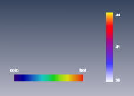

This module allows you to position a colormap icon in the 3D viewer. This is useful, for example, to produce snapshots that contain an explanation of what specific colors mean. Note that although colormaps are ordinary data objects in Amira, they often are hidden by default. Use the Pool/Show Object menu of the main window to display their icons in the Pool. For better results, use a 1x1 tiling for the snapshot.

This is only available if the custom text option is selected. You may specify a space-separated list of values to be displayed. In addition, you may specify a text string that is displayed instead of the number by using the '/' character. The example in the image above has been generated using this text: -8/cold 50/hot, which displays "cold" at value -8 and "hot" at the value 50 (the colormap in this case ranges from -8 to 50). If the label text contain blanks, you must enclose the text in double quotes, e.g., 100/"very hot".
Defines the position of the histogram.
Returns the current font size.
Changes the font size. The default font size is 14 points.
Sets the color of the background rectangle which is drawn when the transparent background toggle is off.
Sets the color of the text.